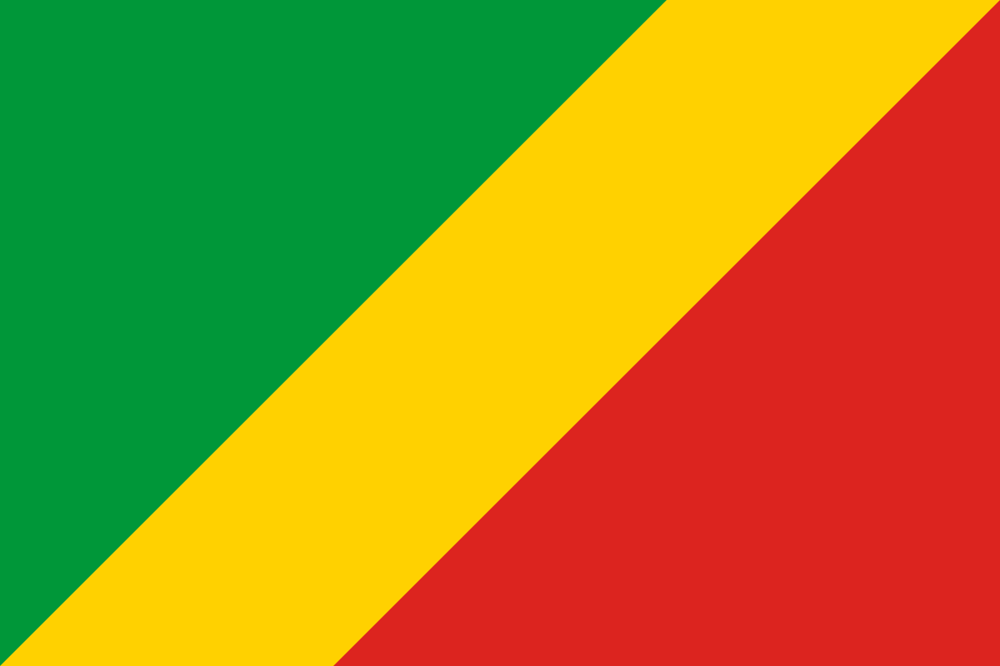

Symboles nationaux de la République du Congo
Le Drapeau de la République du Congo

Le drapeau de la République du Congo, composé du vert, du jaune et du rouge, a été approuvé le 18 août 1959 par une assemblée constituante. Il est adopté comme drapeau officiel le 15 septembre 1959 et n'a pas changé après l'indépendance.
Le drapeau congolais actuel est divisé en diagonale et composé de 3 bandes : jaune, vert et rouge. Chaque couleur symbolise un aspect géographique ou historique de la République du Congo. La bande jaune symbolise l'amitié et la noblesse du peuple, tandis que la bande verte représente l'agriculture et les riches forêts du Congo. La couleur rouge est associée au sang versé lors de la lutte de l’indépendance.
Les Armoiries
Les armoiries de la République du Congo sont fixées comme suit : D'or à la fasce ondée de sinople, au lion de gueules, armé et lampassé de sinople, brochant, tenant un flambeau de sable allumé de gueules. Couronne forestière spéciale. L'écu est supporté par deux éléphants de sable, défendus d’or, mouvant des flancs de l'écu et soutenus par un tronc d'arbre de gueules. Dans le cercle d'or de la couronne forestière : "République du Congo" en lettres de gueules sur listel d'or. Devise : "Unité - Travail - Progrès" en lettres de gueules sur listel d'or.
L’Hymne national de la République du Congo
L'hymne national de la République du Congo est "La Congolaise". Il a été adopté en 1959. Les paroles ont été composées par Jacques Tondra et Georges Kibanghi, la musique par Jean Royer et Joseph Spadiliere.
La Congolaise
En ce jour le soleil se lève
Et notre Congo resplendit.
Une longue nuit s'achève,
Un grand bonheur a surgi.
Chantons tous avec ivresse
Le chant de la liberté.
Chorus :
Congolais, debout fièrement partout,
Proclamons l'union de notre nation,
Oublions ce qui nous divise,
Soyons plus unis que jamais,
Vivons pour notre devise :
Unité, travail, progrès !
Des forêts jusqu'à la savanne,
Des savannes jusqu'à la mer,
Un seul peuple, une seule âme,
Un seul cœur, ardent et fier,
Luttons tous, tant que nous sommes,
Pour notre vieux pays noir.
(Chorus)
Et s'il nous faut mourir, en somme
Qu'importe puisque nos enfants,
Partout, pourront dire comme
On triomphe en combattant,
Et dans le moindre village
Chantent sous nos trois couleurs.
(Chorus)